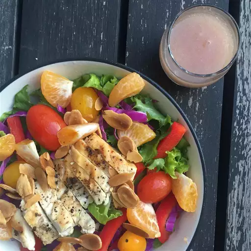

Home
Grilled Chicken Salad

Description
This Grilled Chicken Salad is a light and refreshing dish that's perfect for lunch or dinner. It's packed with fresh vegetables and grilled chicken, making it both healthy and filling. The homemade dressing adds the perfect balance of tangy and savory flavors.
Quick to prepare and full of vibrant flavors, this salad is a great option for anyone looking to eat clean without sacrificing taste.
Ingredients
- 2 chicken breasts
- 4 cups mixed salad greens (lettuce, spinach, arugula, etc.)
- 1 cucumber, sliced
- 1 cup cherry tomatoes, halved
- 1/2 red onion, thinly sliced
- 1 avocado, sliced
- 1 tablespoon olive oil
- Salt and pepper to taste
- For the dressing: 2 tablespoons olive oil, 1 tablespoon balsamic vinegar, 1 teaspoon Dijon mustard, 1 teaspoon honey, salt, and pepper
Steps
- Preheat the grill to medium-high heat. Season the chicken breasts with olive oil, salt, and pepper.
- Grill the chicken for 6-7 minutes on each side, or until fully cooked through and juices run clear. Remove from the grill and let rest for 5 minutes.
- In a small bowl, whisk together the dressing ingredients until well combined.
- Slice the grilled chicken into strips.
- In a large bowl, toss the salad greens, cucumber, cherry tomatoes, red onion, and avocado.
- Top the salad with the sliced chicken and drizzle the dressing over the top.
- Serve immediately and enjoy!